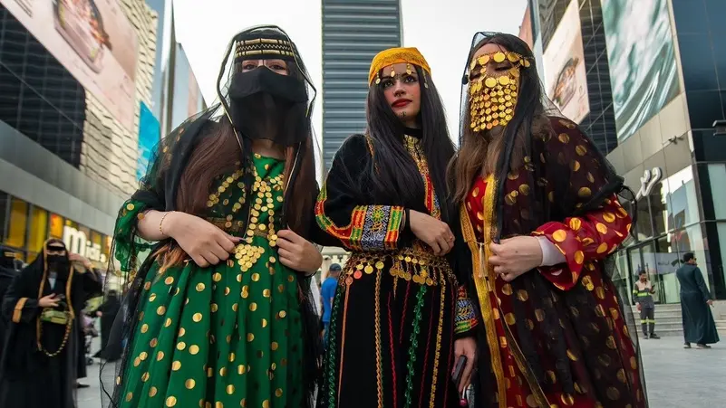
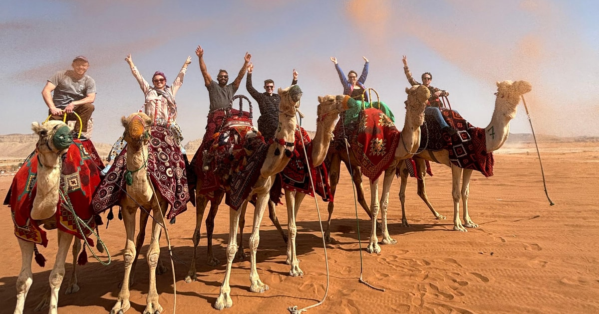
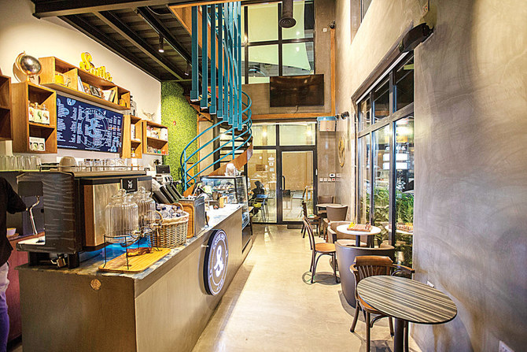
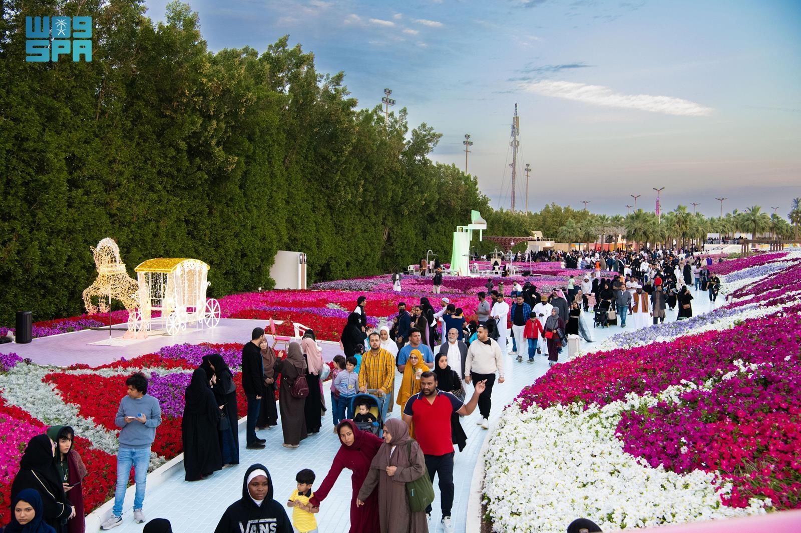

Culture
The culture of Saudi Arabia is a rich one that has been shaped by its Islamic heritage, its historical role as an ancient trade centre, and its Bedouin traditions. Saudi society has experienced tremendous development over the past several decades. The Saudi people have taken their values and traditions—their customs, hospitality, and even their style of dress—and adapted them to the modern world.
Located at the centre of important ancient trade routes, the Arabian people were enriched by many different civilisations. As early as 3,000 BC, Arabian merchants traded with South Asia, Egypt and the Mediterranean, helping Saudi Arabia become an important crossroads of culture and commerce.
The introduction of Islam in the 7th century shaped the region's identity. It encouraged major achievements in science, mathematics, medicine, philosophy and the arts during the Islamic Golden Age.
Every year, millions of Muslims visit Makkah and Madinah for pilgrimage, bringing together cultures from around the world. Saudi Arabia continues to preserve its rich traditions while embracing modern development.



